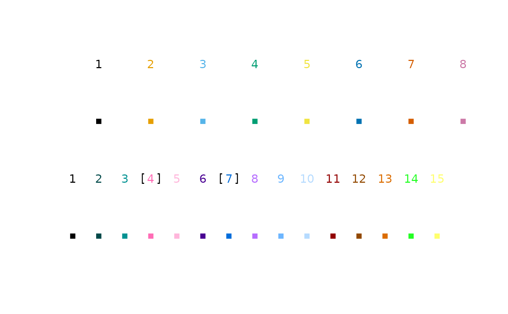

Colour palettes recommended for use with colour blind audiences.
Format
Character vectors of lengths 8, 13 and 15.
An object of class character of length 8.
An object of class character of length 13.
An object of class character of length 15.
Source
cbPalette8: Wong B. 2011. Color blindness. Nat. Methods. 8:441. doi:10.1038/nmeth.1618cbPalette15: https://mk.bcgsc.ca/biovis2012/color-blindness-palette.png
{kind=link}
Details
cbPalette15 is a Brewer palette.
Because colours 4 and 7 are difficult to distinguish from colours 13 and 3,
respectively, in individuals with tritanopia, cbPalette13 omits these
colours (i.e. cbPalette13 <- cbPalette15[-c(4, 7)]).
See also
Since R 4.0, cbPalette8 is available in base R as palette.colors(8).
PlotTools implements improved palettes with 12, 15 and 24 colours.
Examples
data("cbPalette8")
plot.new()
plot.window(xlim = c(1, 16), ylim = c(0, 3))
text(1:8 * 2, 3, 1:8, col = cbPalette8)
points(1:8 * 2, rep(2, 8), col = cbPalette8, pch = 15)
data("cbPalette15")
text(1:15, 1, col = cbPalette15)
text(c(4, 7), 1, "[ ]")
points(1:15, rep(0, 15), col = cbPalette15, pch = 15)
